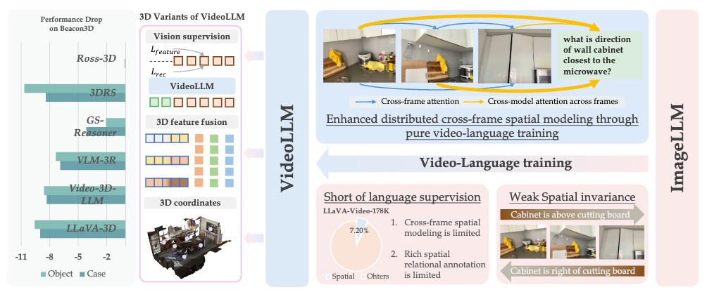

|
Bozheng Li 李泊铮
About me
I am currently a Research Scientist at ByteDance, working on VideoLLMs for Agentic Video Moderation. Previously, I received my master's degree from the Department of Computer Science at Brown University, fortunate to be advised by Prof. Chen Sun. Before that, I graduated from Zhejiang University with a B.Eng degree in Information Engineering, under the supervision of Prof. Yunlong Yu and worked closely with Dr. Mushui Liu.
I spent a wonderful summer at Harvard University as a research intern, privileged to work with Dr. Wanhua Li and Prof. Hanspeter Pfister. I also experienced the best journey at OpusClip working with Wenbo Zhu and Jiawang Cao, exploring video understanding in complex real-world tasks towards the agentic paradigm.
My research interests center on multimodal video understanding, from deploying models in product-level applications to enabling real-world spatial intelligence, with the long-term goal of building proactive video agents that can perceive, reason, and act across both the digital and physical worlds.
News
Selected Projects
|
 |
PVD: Probing VideoLLMs for 3D Awareness
Bozheng Li†, Wanhua Li†, Hanspeter Pfister
In submission
|
|